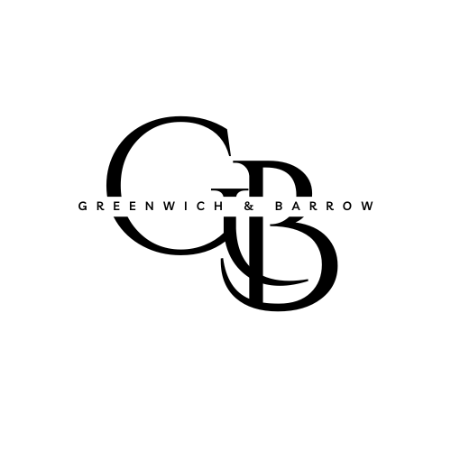

Earn trust before asking for it.
Customers, employees, and advisors can tell when a buyer is listening carefully and when they are simply trying to win a deal.

Greenwich & Barrow
Greenwich & Barrow acquires enduring service businesses built on trust, care, and the kind of standards customers can feel.
For owners
The right buyer understands that the value of a company often lives in ordinary, repeated acts of leadership: how customers are treated, how employees are respected, how problems are handled, and how standards are protected when no one is watching.
Leadership values
Customers, employees, and advisors can tell when a buyer is listening carefully and when they are simply trying to win a deal.
Most enduring companies are not built by accident. They are built through taste, discipline, judgment, and consistency.
Service businesses are won or lost in moments that do not show up cleanly in a spreadsheet.
We are most interested in companies that deserve patient ownership and thoughtful growth, not a quick change of hands.
What fits
Essential services with loyal, repeat customers.
Companies known for care, responsiveness, discretion, or craft.
Owner-led cultures where employees understand the standard.
Situations where continuity is part of what makes the deal work.
Founder-led
Greenwich & Barrow is built from a simple belief: small and middle-market service businesses deserve ownership that respects the people, relationships, and operating details that made them valuable in the first place.
We want the owner, the employees, and the customers to recognize the company after transition. Not frozen in place, but carried forward with judgment.
For intermediaries
We welcome introductions to business owners considering succession, especially where the quality of the buyer matters alongside certainty, discretion, and a thoughtful process.